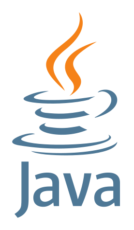
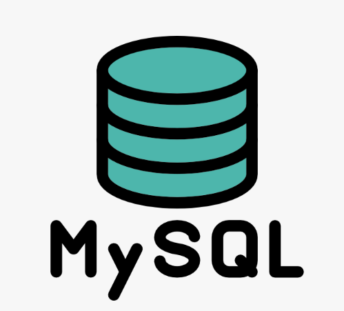
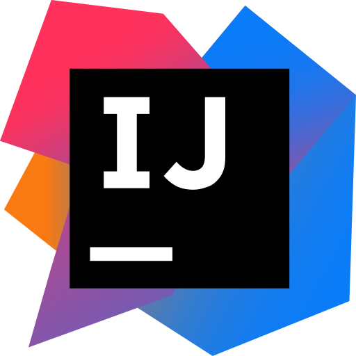
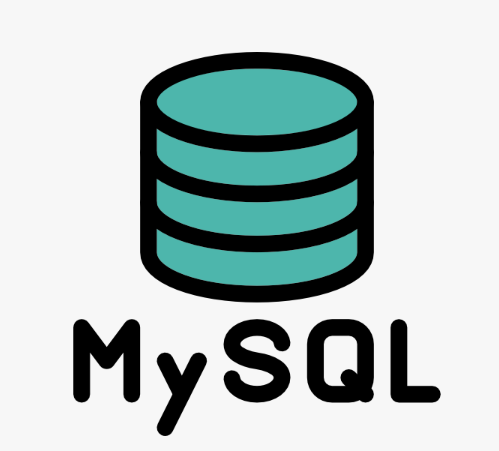
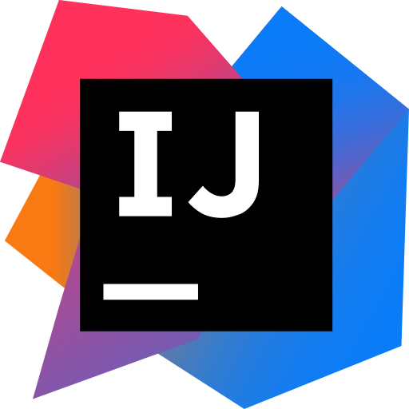

Contact
이메일 : hcu55@naver.com전화번호 : 010-5268-7524
- •안녕하세요! 소프트웨어 개발자가 되고싶은 홍찬의입니다.
- •알고리즘 및 CS 스터디 등의 팀 활동을 하면서 함께 성장하는 것을 지향합니다.
- •기초 딥러닝과 메디컬 딥러닝 연구실 업무 수행하였고 Flutter를 활용한 애플리케이션 개발이 가능합니다.
- •호기심과 도전 의식이 강해 여러가지 프로그래밍 언어에 도전적이고 다양성을 넓히는 개발자가 되고싶습니다.
-
•Programming Language :


-
•Back-end :
 




-
•Mobile App :
OO 대학교 RTOS 연구실 (2022. 05 ~ 2023. 02)
3학년 때 OO대학교 이병대 교수님 RTOS 연구실에 들어가 학부 연구생으로 연구활동을 진행하였습니다. 메디컬 딥러닝에 대해 공부하였고 조직병리학 슬라이드를 이용해 대장암 및 흉선암을 단계별로 분류하기 위한 모델을 개발했습니다. 저는 주로 Multiple Instance Learning에 대한 연구를 진행하였습니다.
2023 공개 SW 개발자대회 “동상”
과학기술정보통신부 주최 제 17회 공개SW 개발자대회에 참가하여 "딥러닝 기반 실시간 포즈 추정 기술을 활용한 스마트 육아 수첩 애플리케이션"을 개발하였습니다.
- •앱의 주요 기능으로는 IoT 홈캠 센서를 통한 아기 수면 영상 정보가 서버에 전송되며 서버에서는 YOLOv8-Pose 모델을 활용하여 아기의 수면을 실시간으로 모니터링하고 문제가 발생하면 앱을 통해 알림을 주는 시스템입니다. 또한 육아 수첩 애플리케이션으로써 다양한 생활 기록, 성장 기록, 건강 검진 시스템을 Flutter로 개발하였습니다. 또한 부모 외 공동 양육자와 함께 편리하게 아이 정보를 관리할 수 있도록 하는 공동 육아 서비스도 구현하였습니다.
- •git 링크 : https://github.com/LSTM2023
2023 SW 상상기업 “우수상”
본교에서 진행된 프로그램을 통해, 저는 학생들로 구성된 팀과 함께 AI 및 SW를 포함한 IT 분야의 문제를 해결하는 가상의 기업을 설립했습니다. 이 과정에서, 실제 사업 환경을 모사하여 사업 계획서 작성부터 아이디어 제안, 검토, 그리고 구현까지 전 과정을 체험했습니다.
- •첫 학기에는 사업 계획의 구체화 단계를 거쳐, 두 번째 학기에는 "딥러닝 기반 실시간 포즈 추정 기술을 활용한 스마트 육아 수첩 애플리케이션" 개발 프로젝트를 실제로 수행했습니다.
AI 컴퓨터공학 산학협력 프로젝트 경진대회 “대상”
베이비 시터를 하시는 어머니의 힘들어하는 모습을 보고, 아기의 수면 상태를 실시간으로 모니터링하고 문제 발생 시 부모에게 알림을 주는 애플리케이션을 개발하게 되었습니다. 이 아이디어는 "영아 돌연사 증후군" 예방과 육아 스트레스 감소에 기여할 수 있을 것이라 생각했습니다.
- •YOLOv8-Pose 모델을 활용하여 아기의 수면 자세를 지속적으로 관찰하고, 문제가 발생하면 앱을 통해 알림을 주는 시스템입니다. 저는 Flutter를 활용하여 애플리케이션 메인 홈 개발 - 아기정보, 생활기록, 성장기록 및 성장 그래프, 예방접종 및 건강검진, iOS 개발, UI 개발, 프로젝트 아이디어 제공을 하였습니다.
- •git 링크 : https://github.com/Mmm2927/LSTM
정보처리기사
-
2023.09 취득
SQLD
-
2024.06 취득
작년 '딥러닝 기반 실시간 포즈 추정 기술을 활용한 육아 수첩 애플리케이션'이라는 프로젝트로
학교 캡스톤디자인과 공개SW 개발자 대회에서 대상과 동상을 수상하며 개발자의 꿈을
키워왔습니다.
Flutter를 활용하여 애플리케이션을 개발하며 새로운 언어에 대한 학습이 흥미가 생기고
애플리케이션 개발에 대한 기초를 학습하였습니다. 하지만, 최종적으로 백엔드 개발자를
희망하고 있었기에 작년 말부터 자바와 Spring을 학습해 오며 취업을 시작하게 되었습니다.
지금까지는 개인의 성장을 위한 학습을 진행했다면 입사를 통해 학교에서 벗어나 새로운
동료들과 함께 성장하고 싶습니다. 또한, 이번 기회를 통해 저의 커리어를 한 단계 성장시키고자
하는 열정이 있습니다.